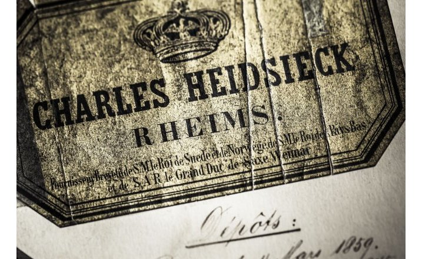

Les Maisons ci-dessous sont à l’origine de la notoriété et du prestige des vins de Champagne dans le monde et ont inventé le mythe champagne. Leur talent réside dans l’élaboration de cuvées qui reflètent de façon immuable le style caractéristique de chaque Marque par l’assemblage de cépages, de crus et d’années issus essentiellement d’achats de raisins auprès de Vignerons avec lesquels elles conviennent de contrats de partenariat pluriannuels.
